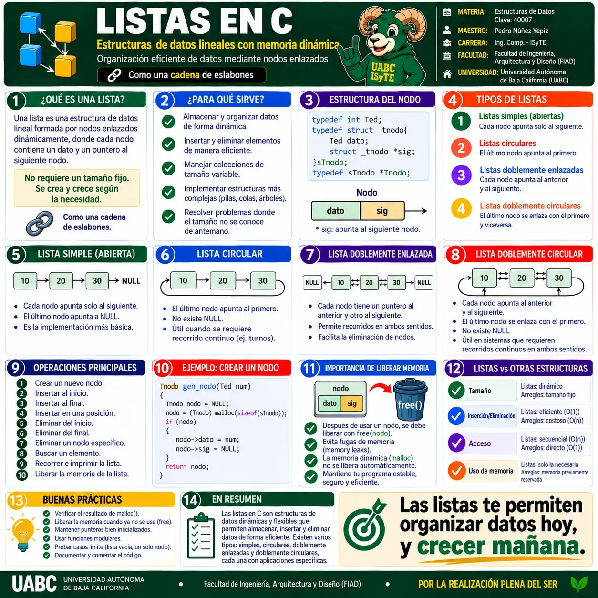
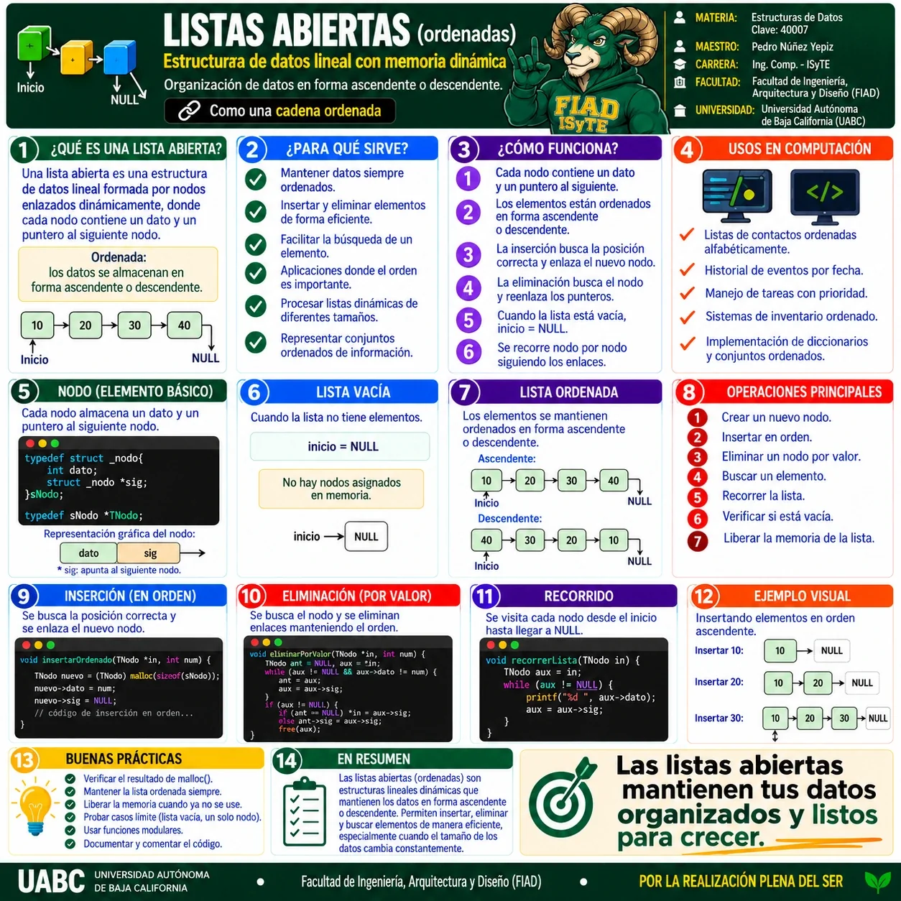
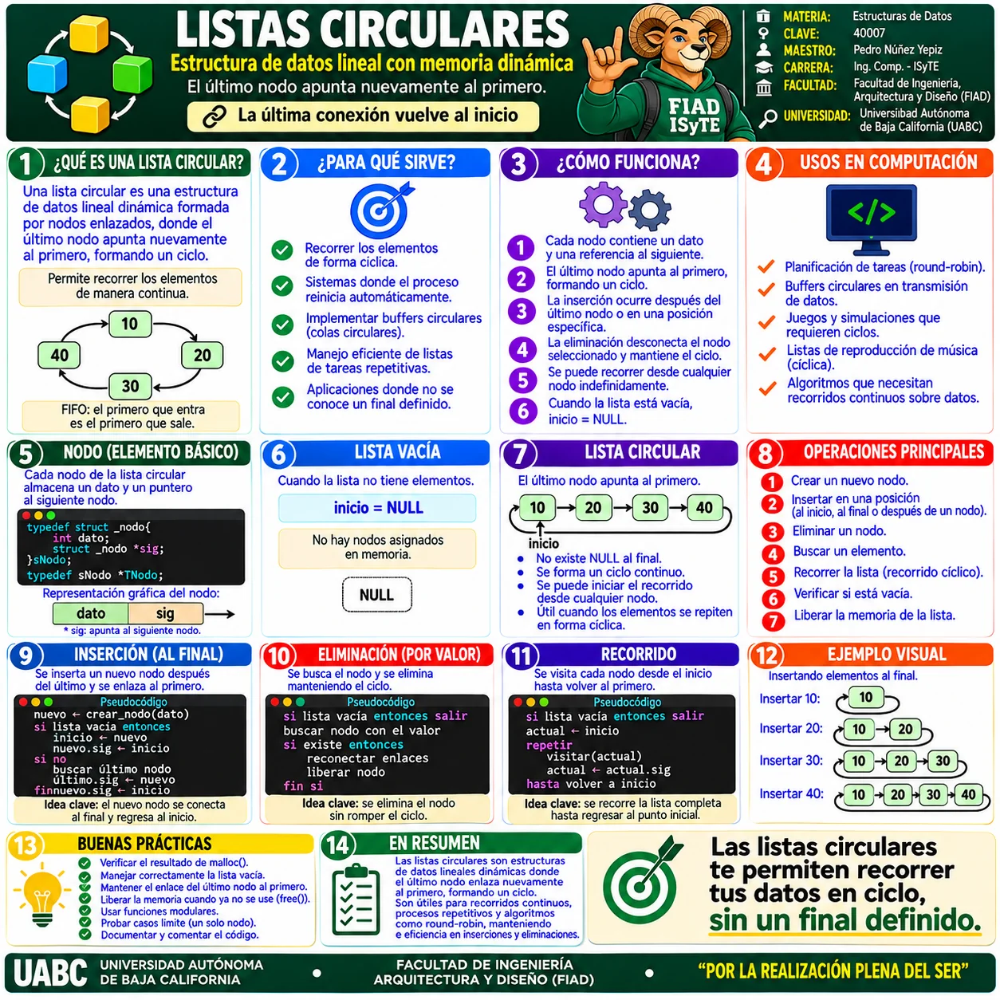
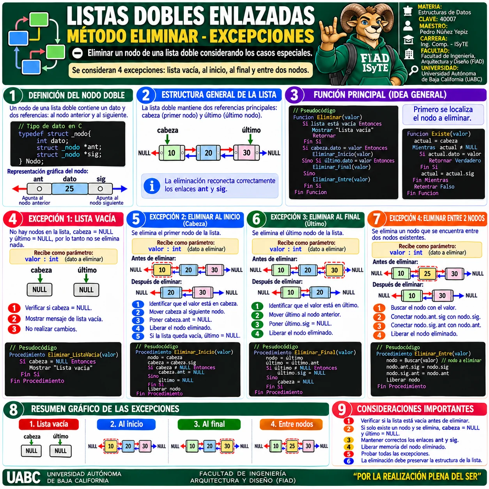
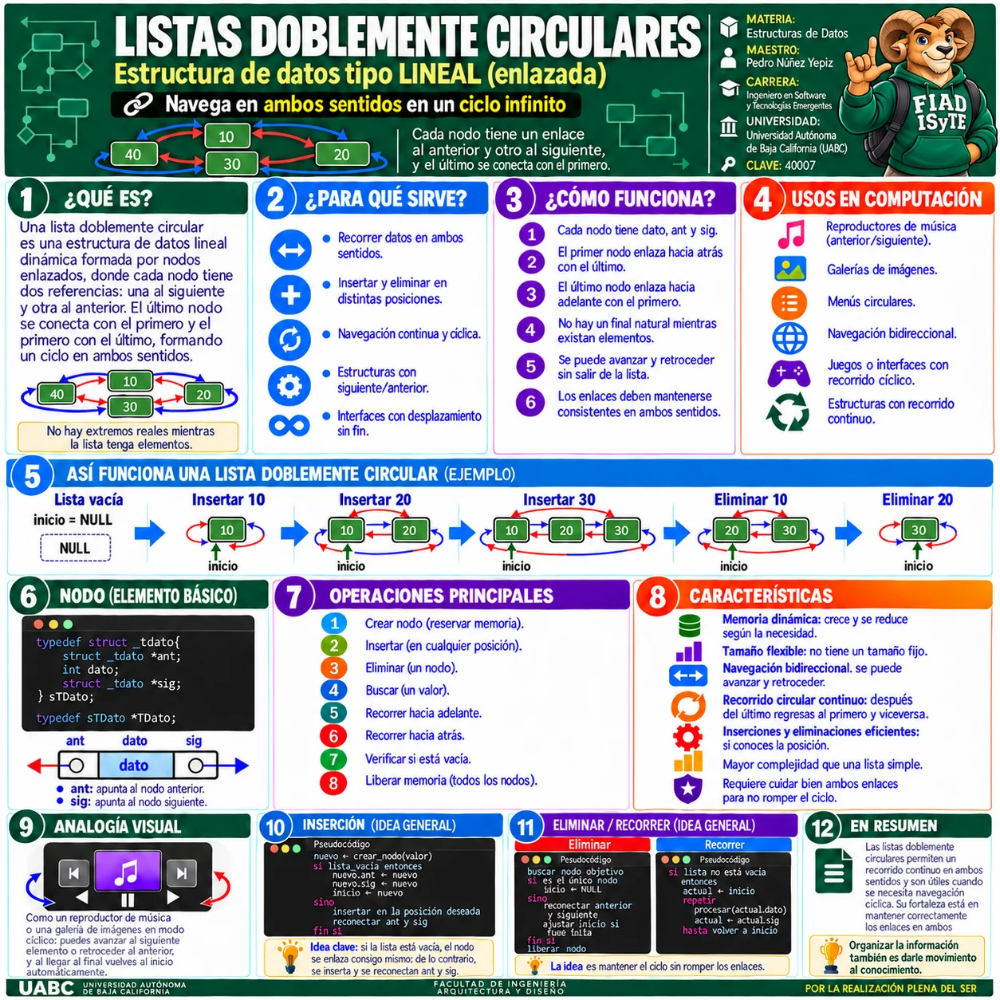

🖼️ Galería visual
Selecciona una infografía para verla a pantalla completa. Puedes usar Zoom +/−, anterior/siguiente y Esc para cerrar.

1 · Listas en C · Visión general
Conceptos generales, tipos de listas, nodo básico, operaciones y memoria dinámica.

2 · Listas abiertas
Lista lineal enlazada, inserción ordenada, eliminación y recorrido.

3 · Listas circulares
Estructura cíclica donde el último nodo vuelve a enlazar con el primero.

4 · Listas dobles enlazadas
Nodos con enlaces anterior y siguiente, navegación bidireccional y operaciones principales.

5 · Listas dobles · Método eliminar
Casos especiales de eliminación: lista vacía, inicio, final y entre nodos.

6 · Listas doblemente circulares
Recorrido bidireccional y circular, con enlaces anterior y siguiente.
💡
RECOMENDACIÓN
Comienza por la infografía general y después revisa listas abiertas, circulares, dobles y doblemente circulares.
Comienza por la infografía general y después revisa listas abiertas, circulares, dobles y doblemente circulares.